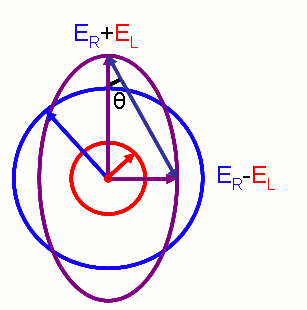
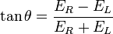

In Experiment 3 we have seen variation in ORD spectra for different chiral molecules. In this experiment we will observe variation of CD spectra for chiral molecules with chromophores. We will aslo try to understand the relation between anomalous ORD spectra and CD spectra.
A CD spectra can be used as an identifying signature of chiral molecules where chromophore is present. For large chiral molecules like protein CD spectroscopy is used as a primary tool for structural characterization.

Circular dichroism leads to the transformation of plane polarized light into elliptically polarized light, and is directly related to differential absorbance of LEft Circularly Polarised (LCP) and Right Circularly Polarised (RCP) components of plane polarized light, by chiral substances which also absorb light. The plot of the variation in the ellipticity, of the elliptically polarized light, as a function of wavelength, gives us the CD spectrum. In order to understand circular dichroism, and its role in CD spectroscopy, we need to visit some definitions and concepts.
CD spectroscopy – Concepts, measurable parameters and quantitative relationships
As we have discussed CD is the direct consequence of differential absorbance. So studying variation of
differential absorbance with variation in wavelength is a good approach. We define delta absorbance,
a parameter to study CD, as
ΔA=AL-AR
where AL and AR represents the absorbance of LCP light and RCP light respectively.
Though the the difference in absorption to be measured is very small (usually a few 1/100ths to a few 1/10th of a percent), but it can be determined quite accurately.
A circular dichroism signal can be positive or negative, depending on whether left circularly polarised light is absorbed to a greater extent than right circularly polarised light (CD signal positive) or to a lesser extent (CD signal negative). An example CD spectrum of a sample with multiple CD peaks is shown below, demonstrating how CD varies as a function of wavelength, and that a CD spectrum may exhibit both positive and negative peaks.
As discussed above, from Beer-Lambert law we can express delta absorbance as
ΔA= (εL - εR)Cl
where, C is the molar concentration, and l is the path length in centimetres(cm).
Therefore we can plot the difference in molar extinction coefficient of LCP and RCP light
Δε= εL - εR as a function of wavelength. Thus we have an intrinsic
property called molar circular dichroism, Δε to represent CD spectroscopy.
Upto now we have seen CD as an intrinsic property of the molecule but in many practical applications of circular dichroism (CD), the measured CD may also be a function of temperature, concentration, and the chemical environment, including solvents. So in those cases we should follow another way to represent CD spectra. To do that instead of looking at the cause of circular dichroism (differential absorbance) we may look at the effect of CD (ellipticity).
Hence we define ellipticity of polarization as the inverse tangent of the quotient of the minor and major axes of the elliptically polarised wave. And it is derived as,
| source:http://en.wikipedia.org/wiki/File:Electric_Vectors_1.png |  |
where
ER and EL are the magnitudes of the electric field vectors of the right-circularly and left-circularly polarized light, respectively.
This ellipticity will depend on the path length and concentration of medium. So we can think of specific ellipticity,
ellipticity per unit length per unit concentration.We can think of an intrinsic property in terms of this ellipticity,
molar ellipticity ([θ]), which is simply the product of molecular weight of the molecule and specific ellipticity.
[θ] = M x specific ellipticity x 10-2
Now the Molar circular dichroism, Δε, and molar ellipticity, [θ], are readily interconvertable by the equation:
[θ] = 3298.2 ε
After having discussed different measurable parameters related to CD spectra lets have a look at how it is measured in practical situations.
Circular dichroism spectra are measured using a CD spectrometer which is a highly specialised derivative of an ordinary absorption spectrometer. CD spectrometers measure alternately the absorption of left and right circularly polarised lights, usually at a frequency of 50 kHz, and then calculate the CD signal. CD is reported either in units of ΔA, the delta absorbance (is discussed below), or in degrees ellipticity. [θ], the molar ellipticity in deg cm2 dmol–1 = 3298.2 δA which is also discussed in detail below.
Note: One should be very careful with the concentration of the sample taken. There is a misconception that more the concentration, better the CD signal which is totally incorrect. However, in reality, the reverse happens. If the concentration is more, less light will pass through it and it will give the CD signal with error. Therefore, an optimal concentration of the sample should be chosen to obtain an error-free CD signal.
CD vs ORD : their interrelation and preference of CD over ORD
We have seen Circular dichroism as an absorptive effect and ORD as a dispersive effect of interaction between an EM wave and an anisotropic medium. We also have discussed the measuring parameters of ORD and CD. In case of ORD the molecular rotation [M]Tλ and in case of CD the molar ellipticity [θ]Tλ are the most important parameters. They are also interrelated by Kroning-Kramer transformation as shown below.
|
|
So we can easily switch between CD and ORD data. One must keep in mind that ORD is observed in any molecule which is chiral but CD is observed only when there is a chromophore. So when CD is observed a cotton effect must be present there.
But in practical purpose we prefer CD data over ORD data. There are several reasons behind doing that
- In ORD if several cotton effects are present then it is difficult to estimate their magnitude, sign and wavelength. In CD spectra it is much easier to interpret. There exists an one to one correspondence between absorption peaks and CD signals.
- CD spectra has a better sensitivity.
- Since CD spectra is not spread over a wide range like ORD spectra, it has a better resolution.
Goal of The Experiment
In this experiment we have two samples. They are enantiomers of each other. We will learn to determine which one is R and which one is S enantiomer. After that we will measure the ORD and CD spectrum of both the samples. Once we get all the spectrum we will try to match the ORD curve of a smaple to its own CD graph.

The purpose of this lab is to make students familiar with different types of CD spectra obtained from different chiral substances with chromophore. By doing this experiment user will be able to,
-
Develop an understanding about assigning R and S configuration to chiral structures.
-
Be familiar with the nature of CD curves of samples of different chirality.
-
Understand relation between CD and ORD spectra obtained from the same sample.

Simulation Under Construction.

The experiment is composed of a number of steps. One may follow the steps given below to successfully run the experiment.
- In the “Understanding Structure of Chiral Molecules” step you will be given two samples. You can click on any sample and study its structure and conformation.
- Once you are satisfied you can click “Next” to go to the next Step.
- Next Step is “Assigning R & S Configuration”. Here you are given structures of four samples as individual Jmol applets. The Table “Jmol Instructions” provides guide lines to study those structures efficiently. You have to decide whether the structure is a R or a S enantiomer and select the corresponding Radio Button for each structure. Once you decide and choose your option for both the structures you should submit your answer. You will be informed whether your decission is correct or not. You can skip this step at any point of time by clicking “Skip”. To decide whether the structure is R or S you may follow the following instructions
-
First look at the atoms that are directly attached to the stereocenter of the compound.
A substituent that has a higher atomic number takes precedence over a substituent that has a lower atomic number.
Hydrogen is the lowest priority substituent. When you are dealing with isotopes, the atom with the higher atomic mass
received higher priority.
Note: The lowest priority substituents should always go away from the viewer
Note: Keep in mind that priority is determined by the first point of difference along the two similar substituent chains. After you have reached the first point of difference, the rest of the chain is irrelevant.
- When you have two substituents that have equal rank, we proceed along the two respective substituent chains until we find a point of difference.
- When you are looking for the first point of difference on similar substituent chains, you may encounter branching. If there is branching, we choose the branch that is higher in priority. When the two substituents have similar branches, you rank the elements within the branches until you reach a point of difference.
- When you come across double and triple bonds, treat them as if they were the same number of single bonds connected to that atom instead. Think of the atoms as duplicated or triplicated:
- After all your substituents have been prioritized in the correct manner, you can name it either R or S. By putting the lowest priority substituent in the back (dashed line), the rotation of the other three substituents will help determine whether the molecule is R or S. In the order of priority (1, 2, 3), if the molecule rotates to the right, it is an R. Conversely, if it rotates to the left, it is considered a S.
- In next step you will be measuring the CD and ORD spectrum of different chiral samples. First click the "Switch the CD mode" button. The samples will be activated for selecting. Select any sample and "Measure ORD". The ORD spectrum will be shown on screen. You can "Measure Again" or skip the step.
- Next Step is the "Analysis" step. At the left side of your screen you are given a picture of two ORD spectrum. And there is one CD spectrum example on the screen. Now you have to decide among the ftwo given ORD spectra, with which the given CD spectra corresponds with. Once you select one graph you should submit your result and you will informed whether you are right or wrong. If you do correctly you can load the next sample. You can skip this step also at any point of time by clicking “Skip”. Otherwise you will be asked to perform the analysis for both the samples.

Click here to have a self evaluation.

- Circular Dichroism
http://en.wikipedia.org/wiki/Circular_dichroism - Introduction to Circular Dichroism Spectroscopy:
http://www.photophysics.com/circulardichroism.php
http://www.ruppweb.org/cd/cdtutorial.htm - Circular dichroism (CD) units and conversions
http://www.photophysics.com/cdunits.php - Principle of operation of a circular dichroism spectrometer
http://www.photophysics.com/cdoperation.php - Classification of Polarization
http://hyperphysics.phy-astr.gsu.edu/hbase/phyopt/polclas.html - To try your own EMANIM animation of the CD concepts with variable parameters, Please download the software from:
http://www.enzim.hu/~szia/emanim/emanim.htm